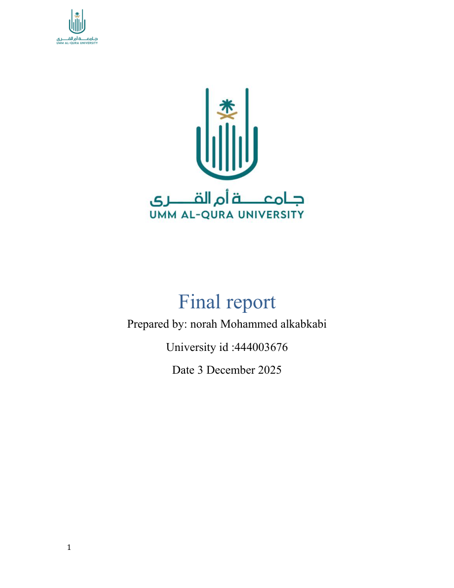
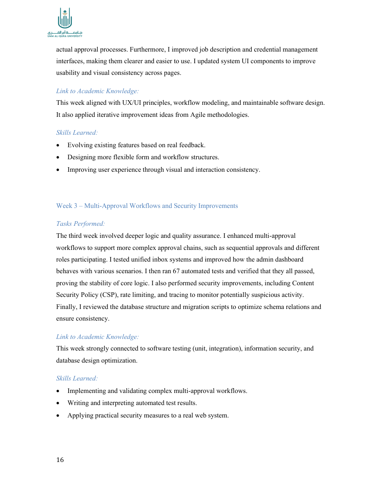
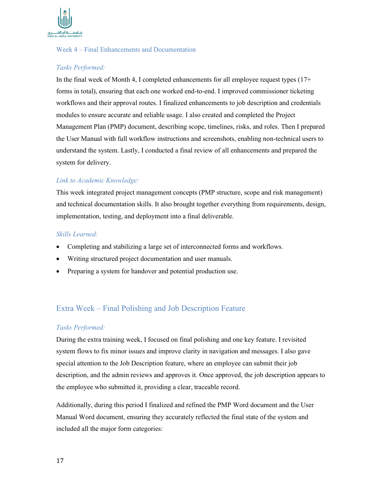
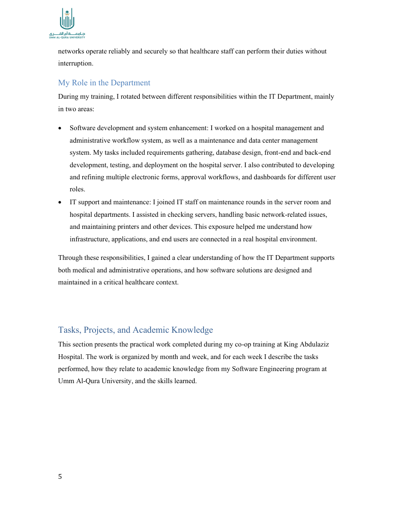

إدارة المستشفى والسير الإداري
لوحات تحكم حسب الدور، 17+ نموذج طلب، موافقات متعددة، تفويض، وإدارة الأدوار.
منصة داخلية لإدارة طلبات الموارد البشرية، الموافقات متعددة المراحل، ولوحات التحكم حسب الدور — بُنيت خلال التدريب التعاوني في قسم تقنية المعلومات بمستشفى الملك عبد العزيز.

نظامان كاملان — أحدهما للسير الإداري والموارد البشرية، والآخر للصيانة ومركز البيانات.
لوحات تحكم حسب الدور، 17+ نموذج طلب، موافقات متعددة، تفويض، وإدارة الأدوار.
تذاكر، مراقبة خوادم، نسخ احتياطي، RBAC، ونماذج طلبات خارجية.
معاينة بصرية من تقرير التدريب — النظام الكامل يعمل على خادم المستشفى مع قاعدة بيانات MySQL.



هذه الصفحة على GitHub Pages تعرض نظرة عامة على المشروع. التطبيق الكامل (واجهة + API + قاعدة بيانات) يُشغَّل محلياً أو على خادم المستشفى — وليس كتطبيق تفاعلي على Pages. للكود المصدري والتشغيل، استخدمي مستودع GitHub.